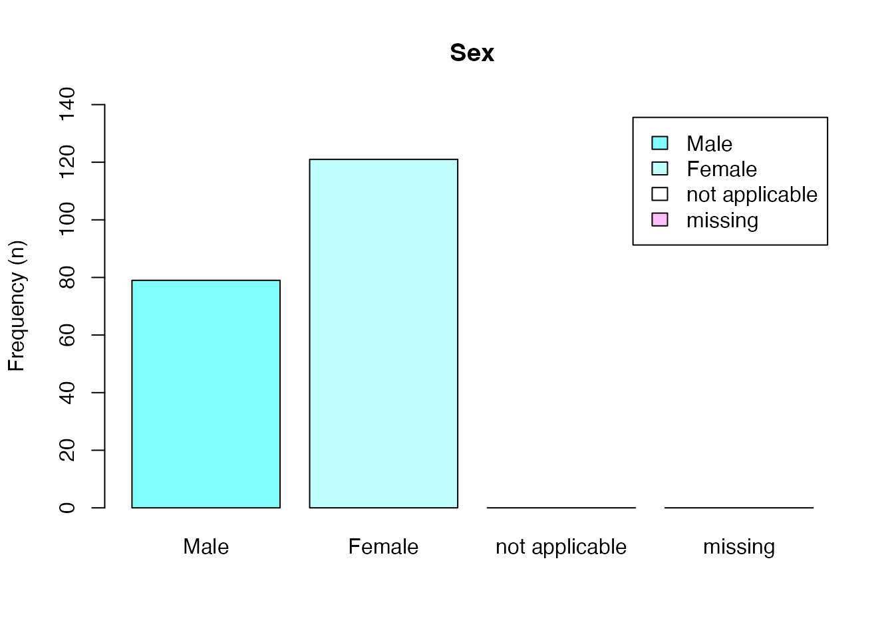

# Install release version from CRAN
install.packages("cchsflow")
# Install the most recent version from GitHub
devtools::install_github("Big-Life-Lab/cchsflow")Use rec_with_table() to transform the variables of a
CCHS dataset.
In this example, the sex variable in the 2001 CCHS cycle
is transformed into a harmonized sex variable that is
consistent all CCHS cycles.
sex2001 <- rec_with_table(cchs2001_p, "DHH_SEX",
log = TRUE,
var_labels = c(DHH_SEX = "SEX")
)
#> No variable_details detected.
#> Loading cchsflow variable_details
#> Using the passed data variable name as database_name
#> The variable DHHA_SEX was recoded into DHH_SEX for the database cchs2001_p the following recodes were made:
#> value_to From rows_recoded
#> 1 1 1 79
#> 2 2 2 121
#> 3 NA::a 6 0
#> 4 NA::b [7,9] 0#> DHH_SEX
#> 1 2
#> 2 2
#> 3 1
#> 4 2
#> 5 2
#> 6 1cchs2001_p is the name of test CCHS data that is
included in the cchsflow library. cchsflow includes
test CCHS data for the public use microdata file (PUMF) for all general
household survey (.1 versions) between 2001 and 2013. Each survey cycle
has a sample of 200 respondents. cchs2000_p indicates this
isthe CCHS 2001 PUMF file. See Reference for more information of
each CCHS cycle.
You’ll want to use cchsflow on your own CCHS data that
you’ll need to first load: something like
cchs2001 <- read.csv("~/data/cchs2001.csv"). CCHS PUMF
data can be obtained from Statistics Canada.
DHH_SEX is the name of the harmonized variable for sex.
Up to 2007, the variable names in CCHS changed every cycle. Since 2007,
there has generally been a consistent name. cchsflow
uses the variable name from the 2007 cycle whenever possible. For
example, in the CCHS 2001, the variable for sex is DHHA_SEX
and in CCHS 2007 the same variable is DHH_SEX. This name,
DHH_SEX is the harmonized name for sex, meaning
DHHA_SEX is transformed to DHH_SEX using
rec_with_table().
The rules for the transformation and harmonization are in two
dataframes that are included in variables and
variable_details, both included in cchsflow. There
are vignettes that further describe variables and
variable_details, including how to add or customize
transformed variables.
cchsflow includes commonly used sociodemographic, health behaviour and health status variables. In general, variables across CCHS cycles can be grouped into five categories:
Consistent and unchanged across all cycles. These variables have no changes to the wording of the question that was asked, the response values and who was asked the question (same inclusion criteria and skip pattern).
Mostly consistent across cycles. These variables may have a small
change in wording or response category. Notes for these variables are
printed to the console when they are recoded with
rec_with_table(). The notes are contained in
variable_details$notes. Caution is required when using
these variables. The notes should be reviewed to assess whether these
variables can be used in your study. See Example
2.
Either not collected in all cycles or have major changes between cycles. These variable may be included in cchsflow with a note that says which cycles include the variable and can be transformed to a common variable. See Example 4.
Mostly consistent but with complex changes or transformation rules. See the Reference for these derived and “Potentially problematic variables”. See Example 7.
Not consistent between cycles. Variable that are inconsistent or not asked in most cycles are not included in cchsflow. In the future, we hope to include these variables with an marker that they’ve been reviewed but rejected from inclusion in cchsflow.
notes provide context for the decisions that informed
harmonization that may affect your decision to use a harmonized
variable.
warning(
"cchsflow includes ", length(unique(variable_details$notes)),
" variables with notes."
)
#> Warning: cchsflow includes 113 variables with notes.For example, for DHHGAGE_A the category
NA::b has the following note:
Not applicable, don't know, refusal, not stated (96-99) were options only in CCHS 2003, but had zero responses.
This note informs the decision to combine values 96 to 99 in
DHHGAGE_A for CCHS2003 into one common missing value
NA::b. The label for the NA::b category is,
“don't know (97); refusal (98); not stated (99)”.
By default, rec_with_table() prints notes to the
console.
BMI2001 <- rec_with_table(cchs2001_p, "HWTGBMI", log = TRUE)
#> No variable_details detected.
#> Loading cchsflow variable_details
#> Using the passed data variable name as database_name
#> NOTE for HWTGBMI: CCHS 2001 restricts BMI to ages 20-64. CCHS 2015-2016 uses adjusted BMI. Consider using using HWTGBMI_der for the most concistent BMI variable across all CCHS cycles. See documentation for BMI_fun() in derived variables for more details, or type ?BMI_fun in the console.
#> NOTE for HWTGBMI: CCHS 2001 and 2003 codes not applicable and missing variables as 999.6 and 999.7-999.9 respectively, while CCHS 2005 onwards codes not applicable and missing variables as 999.96 and 999.7-999.99 respectively
#> NOTE for HWTGBMI: Don't know (999.7) and refusal (999.8) not included in 2001 CCHS
#> The variable HWTAGBMI was recoded into HWTGBMI for the database cchs2001_p the following recodes were made:
#> value_to From rows_recoded
#> 1 copy [8.07,137.46] 142
#> 2 NA::a 999.6 58
#> 3 NA::b [999.7,999.9] 0Several variables such as BMI have a quite a few notes reflecting a
range of changes that occurred over CCHS cycles. Variables with notes
can usually be used after reviewing and considering whether or how the
variable changes affect your use. There can also be further guidance in
notes. For example, BMI notes include advice to use
HWTGBMI_der. Despite the large number of changes, BMI can
be used for most studies because the common transformed variable
HWTGBMI_der was derived from height and weight variables
that are included and largely unchanged across CCHS cycles. However, to
use HWTGBMI_der you’ll also need to include the transformed
measures for height (HWTGHTM) and weight
(HWTGWTK). More information about HWTGBMI_der
can be found in the documentation reference for ‘derived variable
functions’ or by typing ?BMI_fun in the R console.
BMI2001C <- rec_with_table(cchs2001_p,
c("HWTGHTM", "HWTGWTK", "HWTGBMI_der"),
log = TRUE
)
#> No variable_details detected.
#> Loading cchsflow variable_details
#> Using the passed data variable name as database_name
#> NOTE for HWTGHTM: 2001 and 2003 CCHS use inches, values converted to meters to 3 decimal points
#> NOTE for HWTGHTM: 74+ inches converted to 76 inches
#> The variable HWTAGHT was recoded into HWTGHTM for the database cchs2001_p the following recodes were made:
#> value_to From rows_recoded
#> 1 1.118 1 0
#> 2 1.143 2 0
#> 3 1.168 3 0
#> 4 1.194 4 0
#> 5 1.219 5 0
#> 6 1.245 6 0
#> 7 1.27 7 0
#> 8 1.295 8 0
#> 9 1.321 9 0
#> 10 1.346 10 0
#> 11 1.372 11 0
#> 12 1.397 12 0
#> 13 1.422 13 1
#> 14 1.448 14 0
#> 15 1.473 15 1
#> 16 1.499 16 2
#> 17 1.524 17 8
#> 18 1.549 18 7
#> 19 1.575 19 21
#> 20 1.6 20 12
#> 21 1.626 21 13
#> 22 1.651 22 19
#> 23 1.676 23 16
#> 24 1.702 24 21
#> 25 1.727 25 16
#> 26 1.753 26 11
#> 27 1.778 27 13
#> 28 1.803 28 14
#> 29 1.829 29 10
#> 30 1.854 30 8
#> 31 1.93 31 6
#> 32 NA::a 96 0
#> 33 NA::b 99 1
#> The variable HWTAGWTK was recoded into HWTGWTK for the database cchs2001_p the following recodes were made:
#> value_to From rows_recoded
#> 1 copy [27.0,135.0] 199
#> 2 NA::a 999.96 0
#> 3 NA::b [999.97,999.99] 1Warning messages will appear when your dataset is missing variables
in your variables worksheet or
rec_with_table() call.
rec_with_table() can include variable and value labels
for the harmonized variables using the var_labels
attribute. By default, rec_with_table() will include all
labels if then all variables in variables are recoded. See
Example 6.
sex2001 <- rec_with_table(cchs2001_p, "DHH_SEX",
log = TRUE,
var_labels = c("DHH_SEX" = "Sex")
)
#> No variable_details detected.
#> Loading cchsflow variable_details
#> Using the passed data variable name as database_name
#> The variable DHHA_SEX was recoded into DHH_SEX for the database cchs2001_p the following recodes were made:
#> value_to From rows_recoded
#> 1 1 1 79
#> 2 2 2 121
#> 3 NA::a 6 0
#> 4 NA::b [7,9] 0Labels can then be used in plots and tables.
barplot(
table(as_label(sex2001$DHH_SEX)),
col = cm.colors(5),
ylim = c(0, 140),
legend = TRUE,
main = get_label(sex2001$DHH_SEX),
ylab = "Frequency (n)"
)
If you’ve been watching, you may have noticed that cchsflow
recodes the values in factor or categorical variables for 6 (“not
applicable”), 7 (“don’t know”), and 8 (“refusal”), 9 (“not stated”) into
tagged_NA values NA(a) (“not applicable”) and NA (b)
(“missing”). There are two reasons. First, the typical uses of CCHS
consider the two values “not applicable” and “missing” for most
situations. Second, R and other open languages typically support only
one NA.
Be careful when use use NA in your study. See missing data (tagged_na)for
more information.
library(haven)
x <- c(1:5, tagged_na("a"), tagged_na("b"), tagged_na("b"), NA)
x
#> [1] 1 2 3 4 5 NA NA NA NA
# Do you want to calculate mean by excluding 'missing', 'not applicable', or both?
sum(!is_tagged_na(x, "a"))
#> [1] 8
sum(!is_tagged_na(x, "b"))
#> [1] 7
sum(!is.na(x))
#> [1] 5
sum(!is_tagged_na(x))
#> [1] 6rec_with_table()
With rec_with_table() there are also default arguments
that do not need to be called unless you would like to modify them.
variables defaults to NULL. This results in the
variables.csv sheet in the cchsflow package being used to
specify which variables to transform. This argument can be modified if
you want use your own variables.csv sheet or by specifying
particular variables to transform.database_name defaults to NULL. This results in
rec_with_table() using the database indicated in the
data argument.variable_details defaults to NULL. This results in the
variable_details.csv sheet in the cchsflow being used. This
argument can be modified if want use your own
variable_details.csv sheet.else_value defaults to NA. Values out of range set to
NA.append_to_data defaults to FALSE. Transformed variables
will not be appended to the original CCHS dataset.log defaults to FALSE. Logs of the variable
transformations will not be displayed.notes defaults to TRUE. Information in the
Notes column from variable_details.csv will be
displayedvar_labels is set to NULL. This argument can be used to
add labels to a transformed dataset that only contains a subset of
variables from variables.csv. The format to add labels to a
subset of variables is c(variable = "Label").attach_data_name is set to FALSE. This argument can be
used to append a column that denotes the name of the dataset each
transformed row came from. See Example 8.This example shows how you can transform and combine a variable
across multiple CCHS cycles. The sex variable in CCHS 2001
(DHHA_SEX) and CCHS 2012 (DHH_SEX) is
transformed a common variable (DHH_SEX) and combined into a
single dataset. In cchsflow the CCHS 2007 variable name is used
as the common variable name. See the variable_details vignette for more
information.
sex2001 <- rec_with_table(cchs2001_p, "DHH_SEX", log = TRUE)
#> No variable_details detected.
#> Loading cchsflow variable_details
#> Using the passed data variable name as database_name
#> The variable DHHA_SEX was recoded into DHH_SEX for the database cchs2001_p the following recodes were made:
#> value_to From rows_recoded
#> 1 1 1 79
#> 2 2 2 121
#> 3 NA::a 6 0
#> 4 NA::b [7,9] 0
head(sex2001)
#> DHH_SEX
#> 1 2
#> 2 2
#> 3 1
#> 4 2
#> 5 2
#> 6 1
sex2012 <- rec_with_table(cchs2012_p, "DHH_SEX", log = TRUE)
#> No variable_details detected.
#> Loading cchsflow variable_details
#> Using the passed data variable name as database_name
#> The variable DHH_SEX was recoded into DHH_SEX for the database cchs2012_p the following recodes were made:
#> value_to From rows_recoded
#> 1 1 1 78
#> 2 2 2 122
#> 3 NA::a 6 0
#> 4 NA::b [7,9] 0
tail(sex2012)
#> DHH_SEX
#> 195 1
#> 196 2
#> 197 1
#> 198 2
#> 199 1
#> 200 1
combined_sex <- merge_rec_data(sex2001, sex2012)#> DHH_SEX
#> 1 2
#> 2 2
#> 3 1
#> 4 2
#> 5 2
#> 6 1
#> DHH_SEX
#> 395 1
#> 396 2
#> 397 1
#> 398 2
#> 399 1
#> 400 1There are many variables in the CCHS that changes in categories
between cycles in a way that the variable cannot preserve all categories
for all CCHS cycles. An example is the categorical variable for
age. cchsflow offers three options to facilitate
the use of these variables with inconsistent categories across
cycles.
age variable into a common
variable for only cycles with the same category responses
Transform the age variable into variables that cannot be
combined across cycles. The categories in age variable in
the CCHS changed in 2005 and therefore it is not possible to have the
same age categories across all CCHS cycles.
DHHGAGE_A is the age variable for CCHS cycles 2001-2003,
and DHHGAGE_B is the age variable for CCHS cycles
2005-2018.
age2001 <- rec_with_table(cchs2001_p, "DHHGAGE_A")
#> No variable_details detected.
#> Loading cchsflow variable_details
#> Using the passed data variable name as database_name
#> NOTE for DHHGAGE_A: Not applicable, don't know, refusal, not stated (96-99) were options only in CCHS 2003, but had zero responses
head(age2001)
#> DHHGAGE_A
#> 1 15
#> 2 15
#> 3 5
#> 4 14
#> 5 3
#> 6 14
age2012 <- rec_with_table(cchs2012_p, "DHHGAGE_B")
#> No variable_details detected.
#> Loading cchsflow variable_details
#> Using the passed data variable name as database_name
tail(age2012)
#> DHHGAGE_B
#> 195 8
#> 196 11
#> 197 6
#> 198 15
#> 199 9
#> 200 16
combined_age_cat <- merge_rec_data(age2001, age2012)#> DHHGAGE_A DHHGAGE_B
#> 1 15 NA(c)
#> 2 15 NA(c)
#> 3 5 NA(c)
#> 4 14 NA(c)
#> 5 3 NA(c)
#> 6 14 NA(c)
#> DHHGAGE_A DHHGAGE_B
#> 395 NA(c) 8
#> 396 NA(c) 11
#> 397 NA(c) 6
#> 398 NA(c) 15
#> 399 NA(c) 9
#> 400 NA(c) 16age variable into a
continuous age_cont variable
Transform categorical variables such as age into a
single harmonized age_cont variable. This variable takes
the midpoint age of each category for all CCHS cycles. With this option,
the age category variable from all CCHS cycles can be combined into a
single dataset.
age2001_cont <- rec_with_table(cchs2001_p, "DHHGAGE_cont")
#> No variable_details detected.
#> Loading cchsflow variable_details
#> Using the passed data variable name as database_name
head(age2001_cont)
#> DHHGAGE_cont
#> 1 85
#> 2 85
#> 3 32
#> 4 77
#> 5 22
#> 6 77
age2012_cont <- rec_with_table(cchs2012_p, "DHHGAGE_cont")
#> No variable_details detected.
#> Loading cchsflow variable_details
#> Using the passed data variable name as database_name
tail(age2012_cont)
#> DHHGAGE_cont
#> 195 42
#> 196 57
#> 197 32
#> 198 77
#> 199 47
#> 200 85
combined_age_cont <- merge_rec_data(age2001_cont, age2012_cont)#> DHHGAGE_cont
#> 1 85
#> 2 85
#> 3 32
#> 4 77
#> 5 22
#> 6 77
#> DHHGAGE_cont
#> 395 42
#> 396 57
#> 397 32
#> 398 77
#> 399 47
#> 400 85age variable into a
harmonized categorical variable
cchsflow often includes a common harmonized categorical
variable that has new, consistent categories across all cycles. These
new categorical variables generally have fewer category levels than the
original variables, reflecting the need to combine categories. Read the
Notes variable for details.
The variables argument in rec_with_table() allows
multiple variables to be transformed from a CCHS dataset. In this
example, the age and sex variables from the 2001 and 2012 CCHS datasets
will be transformed and labeled using rec_with_table().
They will then be combined into a single dataset and labeled using
merge_rec_data().
age_sex_2001 <- rec_with_table(cchs2001_p, c("DHHGAGE_cont", "DHH_SEX"),
var_labels = c(DHHGAGE_cont = "Age", DHH_SEX = "Sex")
)
#> No variable_details detected.
#> Loading cchsflow variable_details
#> Using the passed data variable name as database_name
get_label(age_sex_2001)
#> DHH_SEX DHHGAGE_cont
#> "Sex" "Age"
age_sex_2012 <- rec_with_table(cchs2012_p, c("DHHGAGE_cont", "DHH_SEX"),
var_labels = c(DHHGAGE_cont = "Age", DHH_SEX = "Sex")
)
#> No variable_details detected.
#> Loading cchsflow variable_details
#> Using the passed data variable name as database_name
get_label(age_sex_2012)
#> DHH_SEX DHHGAGE_cont
#> "Sex" "Age"In the above example, var_labels is called in
rec_with_table() to label the age and sex variables in the
2001 and 2012 datasets. Use get_label() to view the
variable labels in your transformed dataset. As mentioned previously,
var_labels can be used all the variables in
variables.csv or a subset of variables.
combined_age_sex <- merge_rec_data(age_sex_2001, age_sex_2012)In the above code, merge_rec_data() is used to merge and
label the combined age and sex dataset. Similar to before, you can check
if labels have been added using get_label().
get_label(combined_age_sex)
#> DHH_SEX DHHGAGE_cont
#> "Sex" "Age"For more information on get_label() and other label
helper functions, please refer to the sjlabelled
package.
All the variables listed in variables.csv &
variable_details.csv will be transformed if the variables
argument in rec_with_table() is not specified. In this
example, all variables specified in the two worksheets will be
transformed, combined, and labeled for the 2001 and 2012 CCHS
cycles.
# Example of transforming and merging data
transformed2001 <- rec_with_table(data = cchs2001_p, notes = FALSE)
transformed2012 <- rec_with_table(data = cchs2012_p, notes = FALSE)
combined_cchs <- merge_rec_data(transformed2001, transformed2012)| ADMA_RNO | GEOAGPRV | GEOADPMF | ADMA_PRX | ADMA_IMP |
|---|---|---|---|---|
| 6351 | 10 | 10901 | 2 | 2 |
| 72355 | 10 | 10901 | 2 | 2 |
| 1903 | 10 | 10901 | 2 | 2 |
| 6166 | 10 | 10901 | 2 | 2 |
| 37525 | 10 | 10901 | 2 | 2 |
| 70295 | 10 | 10901 | 2 | 2 |
CCHS derived variables are recoded (harmonized) using the same method as other CCHS cchsflow variables, with one additional considerations.
Derived variables in CCHS are created from existing, original variables that are transformed into a new variable. An example is body mass index (BMI). Respondents are asked to report their height and weight. BMI is then derived (calculated) using recoded variables for height and weight.
Recoding BMI into a harmonized variable requires their
underlying initial variables (height and weight). This first step of
harmonizing underlying variables is completed for you, but you must have
the underlying variables in your dataset.
Using the BMI example illustrated in the derived variables article,
rec_with_table() is able to transform BMI across multiple
cycles provided that height (HWTGHTM) and weight
(HWTGWTK) are specified.
bmi2001 <- rec_with_table(cchs2001_p, c("HWTGHTM", "HWTGWTK", "HWTGBMI_der"),
log = TRUE
)
#> No variable_details detected.
#> Loading cchsflow variable_details
#> Using the passed data variable name as database_name
#> NOTE for HWTGHTM: 2001 and 2003 CCHS use inches, values converted to meters to 3 decimal points
#> NOTE for HWTGHTM: 74+ inches converted to 76 inches
#> The variable HWTAGHT was recoded into HWTGHTM for the database cchs2001_p the following recodes were made:
#> value_to From rows_recoded
#> 1 1.118 1 0
#> 2 1.143 2 0
#> 3 1.168 3 0
#> 4 1.194 4 0
#> 5 1.219 5 0
#> 6 1.245 6 0
#> 7 1.27 7 0
#> 8 1.295 8 0
#> 9 1.321 9 0
#> 10 1.346 10 0
#> 11 1.372 11 0
#> 12 1.397 12 0
#> 13 1.422 13 1
#> 14 1.448 14 0
#> 15 1.473 15 1
#> 16 1.499 16 2
#> 17 1.524 17 8
#> 18 1.549 18 7
#> 19 1.575 19 21
#> 20 1.6 20 12
#> 21 1.626 21 13
#> 22 1.651 22 19
#> 23 1.676 23 16
#> 24 1.702 24 21
#> 25 1.727 25 16
#> 26 1.753 26 11
#> 27 1.778 27 13
#> 28 1.803 28 14
#> 29 1.829 29 10
#> 30 1.854 30 8
#> 31 1.93 31 6
#> 32 NA::a 96 0
#> 33 NA::b 99 1
#> The variable HWTAGWTK was recoded into HWTGWTK for the database cchs2001_p the following recodes were made:
#> value_to From rows_recoded
#> 1 copy [27.0,135.0] 199
#> 2 NA::a 999.96 0
#> 3 NA::b [999.97,999.99] 1
head(bmi2001)
#> HWTGHTM HWTGWTK HWTGBMI_der
#> 1 1.422 56.25 27.81784
#> 2 1.549 51.75 21.56788
#> 3 1.803 78.75 24.22474
#> 4 1.575 60.75 24.48980
#> 5 1.727 63.00 21.12301
#> 6 1.829 91.80 27.44197
bmi2012 <- rec_with_table(cchs2012_p, c("HWTGHTM", "HWTGWTK", "HWTGBMI_der"),
log = TRUE
)
#> No variable_details detected.
#> Loading cchsflow variable_details
#> Using the passed data variable name as database_name
#> NOTE for HWTGHTM: Height is a reported in meters from 2005 CCHS onwards
#> The variable HWTGHTM was recoded into HWTGHTM for the database cchs2012_p the following recodes were made:
#> value_to From rows_recoded
#> 1 copy [0.914,2.134] 191
#> 2 NA::a 9.996 2
#> 3 NA::b [9.997,9.999] 7
#> The variable HWTGWTK was recoded into HWTGWTK for the database cchs2012_p the following recodes were made:
#> value_to From rows_recoded
#> 1 copy [27.0,135.0] 189
#> 2 NA::a 999.96 0
#> 3 NA::b [999.97,999.99] 11
tail(bmi2012)
#> HWTGHTM HWTGWTK HWTGBMI_der
#> 195 1.829 108.00 32.28467
#> 196 1.524 70.20 30.22506
#> 197 1.803 84.00 25.83972
#> 198 1.575 63.00 25.39683
#> 199 1.829 85.50 25.55870
#> 200 1.702 74.25 25.63170
combined_bmi <- merge_rec_data(bmi2001, bmi2012)
head(combined_bmi)
#> HWTGHTM HWTGWTK HWTGBMI_der
#> 1 1.422 56.25 27.81784
#> 2 1.549 51.75 21.56788
#> 3 1.803 78.75 24.22474
#> 4 1.575 60.75 24.48980
#> 5 1.727 63.00 21.12301
#> 6 1.829 91.80 27.44197
tail(combined_bmi)
#> HWTGHTM HWTGWTK HWTGBMI_der
#> 395 1.829 108.00 32.28467
#> 396 1.524 70.20 30.22506
#> 397 1.803 84.00 25.83972
#> 398 1.575 63.00 25.39683
#> 399 1.829 85.50 25.55870
#> 400 1.702 74.25 25.63170It can be important to know from which cycle data comes from after
combining all the cycles. rec_with_table() provides the
option of appending a column that indicates from which dataset
respondents come from by setting the parameter
attach_data_name to be TRUE. Using the BMI example in Example 7, rec_with_table() can
specify which dataset each respondent came from.
bmi2001 <- rec_with_table(cchs2001_p, c("HWTGHTM", "HWTGWTK", "HWTGBMI_der"),
log = TRUE, attach_data_name = TRUE
)
#> No variable_details detected.
#> Loading cchsflow variable_details
#> Using the passed data variable name as database_name
#> NOTE for HWTGHTM: 2001 and 2003 CCHS use inches, values converted to meters to 3 decimal points
#> NOTE for HWTGHTM: 74+ inches converted to 76 inches
#> The variable HWTAGHT was recoded into HWTGHTM for the database cchs2001_p the following recodes were made:
#> value_to From rows_recoded
#> 1 1.118 1 0
#> 2 1.143 2 0
#> 3 1.168 3 0
#> 4 1.194 4 0
#> 5 1.219 5 0
#> 6 1.245 6 0
#> 7 1.27 7 0
#> 8 1.295 8 0
#> 9 1.321 9 0
#> 10 1.346 10 0
#> 11 1.372 11 0
#> 12 1.397 12 0
#> 13 1.422 13 1
#> 14 1.448 14 0
#> 15 1.473 15 1
#> 16 1.499 16 2
#> 17 1.524 17 8
#> 18 1.549 18 7
#> 19 1.575 19 21
#> 20 1.6 20 12
#> 21 1.626 21 13
#> 22 1.651 22 19
#> 23 1.676 23 16
#> 24 1.702 24 21
#> 25 1.727 25 16
#> 26 1.753 26 11
#> 27 1.778 27 13
#> 28 1.803 28 14
#> 29 1.829 29 10
#> 30 1.854 30 8
#> 31 1.93 31 6
#> 32 NA::a 96 0
#> 33 NA::b 99 1
#> The variable HWTAGWTK was recoded into HWTGWTK for the database cchs2001_p the following recodes were made:
#> value_to From rows_recoded
#> 1 copy [27.0,135.0] 199
#> 2 NA::a 999.96 0
#> 3 NA::b [999.97,999.99] 1
head(bmi2001)
#> HWTGHTM HWTGWTK HWTGBMI_der data_name
#> 1 1.422 56.25 27.81784 cchs2001_p
#> 2 1.549 51.75 21.56788 cchs2001_p
#> 3 1.803 78.75 24.22474 cchs2001_p
#> 4 1.575 60.75 24.48980 cchs2001_p
#> 5 1.727 63.00 21.12301 cchs2001_p
#> 6 1.829 91.80 27.44197 cchs2001_p
bmi2012 <- rec_with_table(cchs2012_p, c("HWTGHTM", "HWTGWTK", "HWTGBMI_der"),
log = TRUE, attach_data_name = TRUE
)
#> No variable_details detected.
#> Loading cchsflow variable_details
#> Using the passed data variable name as database_name
#> NOTE for HWTGHTM: Height is a reported in meters from 2005 CCHS onwards
#> The variable HWTGHTM was recoded into HWTGHTM for the database cchs2012_p the following recodes were made:
#> value_to From rows_recoded
#> 1 copy [0.914,2.134] 191
#> 2 NA::a 9.996 2
#> 3 NA::b [9.997,9.999] 7
#> The variable HWTGWTK was recoded into HWTGWTK for the database cchs2012_p the following recodes were made:
#> value_to From rows_recoded
#> 1 copy [27.0,135.0] 189
#> 2 NA::a 999.96 0
#> 3 NA::b [999.97,999.99] 11
tail(bmi2012)
#> HWTGHTM HWTGWTK HWTGBMI_der data_name
#> 195 1.829 108.00 32.28467 cchs2012_p
#> 196 1.524 70.20 30.22506 cchs2012_p
#> 197 1.803 84.00 25.83972 cchs2012_p
#> 198 1.575 63.00 25.39683 cchs2012_p
#> 199 1.829 85.50 25.55870 cchs2012_p
#> 200 1.702 74.25 25.63170 cchs2012_p
combined_bmi <- merge_rec_data(bmi2001, bmi2012)
head(combined_bmi)
#> HWTGHTM HWTGWTK HWTGBMI_der data_name
#> 1 1.422 56.25 27.81784 cchs2001_p
#> 2 1.549 51.75 21.56788 cchs2001_p
#> 3 1.803 78.75 24.22474 cchs2001_p
#> 4 1.575 60.75 24.48980 cchs2001_p
#> 5 1.727 63.00 21.12301 cchs2001_p
#> 6 1.829 91.80 27.44197 cchs2001_p
tail(combined_bmi)
#> HWTGHTM HWTGWTK HWTGBMI_der data_name
#> 395 1.829 108.00 32.28467 cchs2012_p
#> 396 1.524 70.20 30.22506 cchs2012_p
#> 397 1.803 84.00 25.83972 cchs2012_p
#> 398 1.575 63.00 25.39683 cchs2012_p
#> 399 1.829 85.50 25.55870 cchs2012_p
#> 400 1.702 74.25 25.63170 cchs2012_p